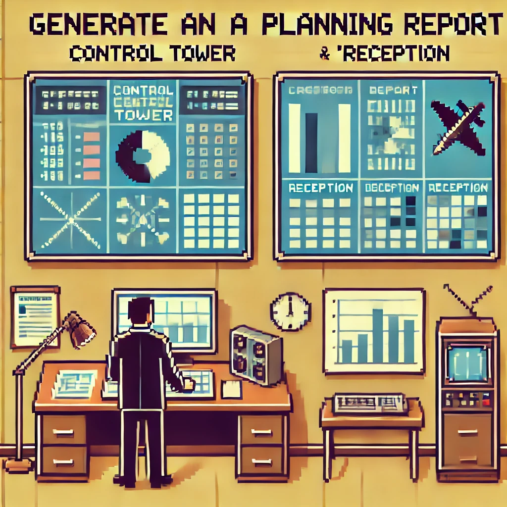

Rapport de Prévision des Implants
Objectif
Détournement et adaptation d'un rapport Spotfire initialement dédié à la RA. En collaboration avec un data analyst, intégration du référentiel des références à implanter afin de prédire avec précision les futurs besoins d'implantation.
Documents
Technologies
Spotfire
WMS
Compétences acquises
- Gérer le patrimoine informatique
- Répondre aux incidents et aux demandes d’assistance
- Mettre à disposition des utilisateurs un service informatique